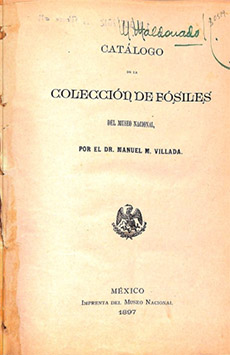

Personaje
Referencias
- Cuevas C. M. 2001. Biografía científica del naturalista Manuel María Villada 1841-1924. Tesis Maestría, Facultad de Ciencias UNAM. 150 p.
- Guevara, F.R. 2002. Los últimos años de la historia natural y los primeros días de la biología en México. Cuadernos del Instituto de Biología 35. Instituto de Biología UNAM. 212 p.
Manuel María Villada
1840 - 1912
Manuel María Villada fue un sabio naturalista que nació en la ciudad de México en 1841 y falleció en 1924.
Estudió “Latinidad y Filosofía” en el Colegio de San Juan de Letrán y posteriormente física, química e historia natural en la Escuela Nacional de Medicina, donde se recibió en 1863. En 1864 participó en la Comisión Científica de Pachuca, proyecto del gobierno y de los intelectuales de la época para conocer las poblaciones humanas, la fauna y flora de la región del hoy estado de Hidalgo.
Fue miembro fundador de la Sociedad Mexicana de Historia Natural, creada en 1868, la cual fue una de las asociaciones científicas más importantes del siglo XIX. La Naturaleza, órgano informativo de la sociedad, fue dirigida y editada por Villada durante todos los años que ésta existió (1890-1914) y fue uno de sus autores más prolíficos.
También formó parte de otros centros educativos y de investigación científica como la Escuela Nacional de Agricultura, donde ingresó en 1868 y miembro de la sección de historia natural de la Academia Nacional de Medicina en 1886. Dirigió en 1881 el Instituto Científico Literario de Toluca y promovió en éste, la creación del primer Observatorio Meteorológico del estado de México.
Posteriormente, en 1886, ingresó al Museo Nacional donde se desempeñó como investigador y profesor de mineralogía, botánica, geología, paleontología y botánica. Además ahí aumentó la colección de fósiles y elaboró el primer catálogo sobre éstos.
La diversidad temática de sus trabajos fue muy amplia, y fueron dados a conocer en las publicaciones propias de cada institución de la que fue miembro. En especial se interesó por las propiedades medicinales de algunas plantas y por el estudio de las aves.
Aportación

Catálogo de la colección de fósiles del Museo Nacional. Dr. Manuel M. Villada